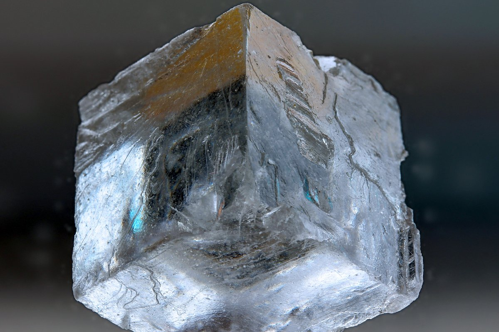
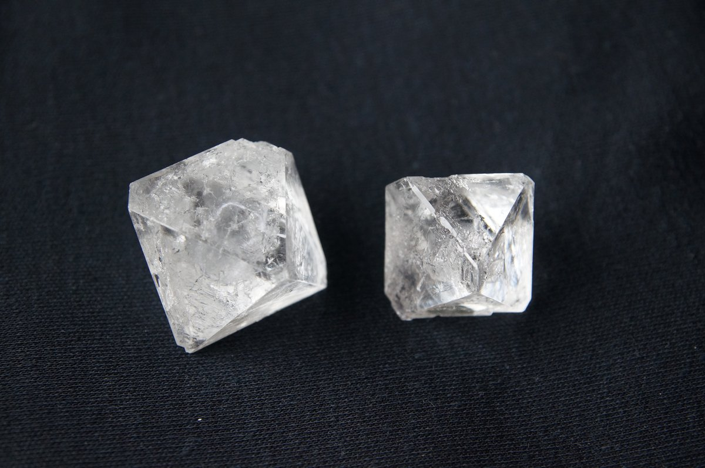

Professor Necker’s Drawing
~11,832 after the ice, or 1832.
In 1832, a professor in Geneva was looking at a drawing like this one when it turned inside out.
Look at it for a moment and it will do the same for you. Let your eyes rest on the middle of the drawing and relax. The drawing is a box, with one corner nearest you. Wait, and that corner will be at the back, and a different corner will be nearest you.
Nothing in the drawing moved. Wait a little longer and the box turns back.
What a crystallographer did
The professor was Louis Albert Necker, and his job was crystals. He had been professor of minerals and rocks at the Academy of Geneva since he was twenty-four.
A crystal is a solid with flat faces and sharp corners. Salt is one. So is a diamond. The faces are flat because a large crystal is built from smaller ones, and those are built from still smaller ones. So you can think of a crystal as a collection of tiny identical bricks, stacked in rows in every direction. The shape of those bricks decides the shape of the whole.
Professor Necker knew that crystals were made of bricks. Nobody could say what the smallest brick looked like. It would be another eighty years before anyone could work that out, and when they did, the first crystal they worked out was salt.
In 1832 Professor Necker had drawers full of crystals. He studied them with a magnifying glass, and with a brass instrument that measured the angle between two faces of a crystal. The angles mattered, because two crystals with the same angles are almost certainly the same mineral, whatever their size or colour. So Professor Necker measured his crystals, and he drew what he measured, as careful outlines.
There were microscopes, and had been for a hundred and fifty years, but nobody used them for crystals. A crystal was a thing you turned in your fingers.
What he noticed
There was something very strange about some of those drawings. A drawing would seem to turn inside out, on its own. One moment the shape in the drawing would seem to be facing one way. The next moment the same shape would seem to be facing another.
Nothing moved. The drawing didn’t change. It just looked different.

It happened with his own drawings, and it happened with the engraved drawings in other people’s books. It happened with all sorts of crystals. The pictures show five of them, each drawn in bare lines and then as the real thing. Salt is a cube. Alum is two pyramids joined at their bases. Diamond is the same shape as alum, though alum is a soft white crystal you can grow in a jar and diamond is the hardest thing there is. Calcite is a box pushed sideways, which is the shape Professor Necker drew. Sugar is a slanted block. Every one of the drawings turns.
This annoyed him. It also interested him. He began to pay attention to the moment when a drawing changed, and he noticed three things. There was a particular feeling in his eye at that moment. The change came whether he looked with one eye or with both. And it seemed to have something to do with where on the drawing his eye happened to be resting.
A letter about the colour of a mountain
In May 1832 Professor Necker wrote a letter to David Brewster, a Scottish physicist he knew from his student days in Edinburgh.
Most of the letter was about Mont Blanc. He had watched the snow on the mountain at sunset. First the snow turns orange. Then, as the sun goes, the snow turns a bluish grey that he called deadly. Then, for a few minutes, a faint orange comes back. He had worked out that the colours were not in the snow. They came from the light around the snow, and from the eye looking at it. He wrote all of that down for Brewster.
Then, near the end of the letter, he added the other thing he had been meaning to mention: his drawings.
Tap See the letter. Professor Necker’s drawing is at the bottom of the left-hand page, with letters on the corners so that he could talk about them. The drawing at the top of this story is a plainer version of it. Everything he says about it fits on one page and a half.
He told Brewster the three things he had noticed. Then he told him how he had proved to himself that the change depended on where his eye was resting. He had done it three ways, and to talk about them he used the letters on his drawing. The two corners that matter are the two in the middle, where three lines meet. He wrote an A beside one of them and an X beside the other.
First, he found that if he looked steadily at the corner closest to A, that corner came to the front. If he looked steadily at the corner closest to X, the drawing turned, and the corner closest to X came to the front. He could make the drawing turn whenever he chose.
Second, he looked steadily at the corner closest to A, and slid a lens between his eye and the page, without moving his eye or the page. The lens shifted the picture a little, so that the corner closest to X slid to where the other corner had been, under his gaze. The drawing turned by itself.
Third, he looked at the drawing through a pinhole in a card, held so that the corner closest to A was hidden. The drawing stopped turning, with the corner closest to X in front. When he hid the corner closest to X instead, the other corner stayed in front. There was no way to see the drawing any other way.
He ended: “You may do what you think most proper with all these observations.” Brewster printed the letter in the London and Edinburgh Philosophical Magazine, which he edited. That was how a discovery travelled in 1832: you wrote to a friend, and the friend printed the letter.
Why it turns
Here is what Professor Necker had found, in the words we would use now.
The drawing doesn’t show one box. It shows two. The lines you would see looking at the box from slightly above are exactly the lines you would see looking at the same box from slightly below. So the drawing fits both boxes, and nothing in the drawing says which box it is.
Two corners of the drawing land in the middle of it, close together, each where three lines meet. One of those corners is the nearest corner of the first box. The other is the nearest corner of the second box. Your eye rests on one of the two corners, and that corner’s box comes to the front.
Hide either corner, and that corner’s box is gone. Professor Necker did that with a pinhole. You can do it with a finger. Put a fingertip over one of the two middle corners of the drawing at the top of this story, either one, and keep looking. The drawing stops. Take your finger away and it starts again.
A filled face does the same thing. Only one of the two boxes has that face in front, so the drawing settles. Tap the filled drawing, and the other face fills instead, and the box seems to turn. Tap again, and both faces are empty, and the box starts turning on its own.
The Necker cube
Today we usually draw a plainer shape, which makes the effect easier to see. Instead of a slanted box, a cube: two squares, one a little above and to the right of the other, with their corners joined. Twelve lines. It turns for exactly the reason Professor Necker’s box did. It is called the Necker cube, though he never drew a cube.
It works with almost any solid drawn in bare lines, as the crystal pictures show. It works best when the nearest corner and the farthest corner both land inside the outline of the drawing, so that either one can be read as the front.
What was going on
Professor Necker thought the feeling he noticed was in his eye. He thought his eye was changing its focus from one corner to the other, and that the change of focus was what turned the drawing. He was half right.
The eye doesn’t change its focus. Where the eye rests is what tips the choice, as he found. But the choosing is not done in the eye. Your brain’s job is to show you the world in the way that makes the most sense. Here there are two ways, and nothing to choose between them, so your brain shows you one box, and then the other. Where your eye rests is the small push that decides which box comes first.
The feeling is real. When the drawing turns, something clicks into place. It is the same feeling you get half a second after you understand a joke. Professor Necker felt it in 1832 and wrote it down, and nobody then had any way to look inside a head. There is a little more about where that feeling comes from at the end of this story.
What Professor Necker could do, you can do
He could make the drawing turn whenever he chose, by looking at one corner or the other. It took him a while to learn. Here is how.
Before you begin, take a moment to relax. This isn’t something you make happen. It is something you let happen.
The cube has a copper dot at each of the two middle corners. Rest your eyes on one of the dots. Don’t try. You don’t even have to focus. Just watch the dot.
In a few seconds the cube will turn.
When that happens, you may notice something: a small, quiet there. It’s the feeling Professor Necker noticed. It is a nice feeling.
Let your eyes rest on the dot for a moment, then move them to the other dot, and wait again.
The cube will turn again. When it does, you’ll have that nice feeling of there. Enjoy it, then slowly move your eyes back to the first dot.
After a few times, you may notice that the turns come sooner. You wait less. You are not doing anything more than you did at the start, and it works better. You may even notice that you can cause the cube to change. It won’t be obvious how you are doing it. Still, you may find that the cube changes when you want it to.
You are learning to tell your brain how to see the cube. That is what Professor Necker learned in Geneva, with a card and a pin.
If you like, tap I want to Remember this, and this cube goes in your practice list.
More
The colour of Mont Blanc. The first part of the letter is a story of its own. The snow turns orange at sunset because the sun has already set for the valley but not for the peaks, and the light that reaches them has come a long way through the air, which takes the blue out of it. The deadly grey and the faint second orange come from what is lit and what is not, and from the eye comparing them. Professor Necker’s word for it was contrast, and he was right about that too. There is a cousin of this at sea, a green flash at the last second of sunset, that astronomers hunt for; that is another story.
The small pleasure. Tap the brain. Two places are lit. The small one, deep in the middle and low down, is about the size of a pea and makes a chemical called dopamine (say “DOPE-uh-meen”) when something turns out well. The larger one is the hippocampus, the librarian that keeps track of what you have just done so you can do it again. If you read The Man Who Learned Without Knowing, you have met it. The two work as a loop: when the hippocampus notices something new, the dopamine answers, and the answer says: keep this one. That much has been measured, mostly in animals. It is the best account anyone has of the there, and of why the cube gets easier.
Other drawings do this too. There’s a staircase that runs along the ceiling when you look at it the second way, drawn by a German scientist named Schröder in 1858, and a drawing that is a duck or a rabbit depending on the moment, and a vase that turns into two faces looking at each other. There’s one made of three lines meeting at a point, which is a corner coming toward you or going away, and it may be the simplest illusion there is. Any picture that two different solid things could have cast will do it.

Alum. A white crystal, sold in shops for pickling and for stopping small cuts from bleeding. You can grow one yourself: dissolve as much as will dissolve in warm water, hang a thread in the jar, and wait a few days. Alum was used for a thousand years to fix dyes in cloth, so the colour would not wash out.
The atoms in salt. They were seen at last in 1913. A father and son named Bragg, in England, shone X-rays through a crystal and worked out, from the pattern that came out, where the atoms had to be. The first crystal they solved was salt: a cube with an atom at each corner, four sodium and four chlorine. That is Necker’s brick.
The Isle of Skye. Necker spent the end of his life there, off the west coast of Scotland, a long way from Geneva and from crystal drawing. He had loved Scotland since he was a student; at twenty-two he drew the first geological map of the whole country. When his mother died in 1841 he moved to Portree, on Skye, and stayed. He died there in 1861.
If the cube keeps turning. If it goes on turning for you no matter what you do, that’s worth knowing rather than worth fixing. How much control people have over the cube varies from person to person, and always has. It isn’t a measure of anything.
Necker’s World
References
Necker’s letter, the story’s main source, for the drawing, the three things he noticed, the three proofs and Mont Blanc: L. A. Necker, “Observations on Some Remarkable Optical Phænomena Seen in Switzerland; and on an Optical Phænomenon Which Occurs on Viewing a Figure of a Crystal or Geometrical Solid,” The London and Edinburgh Philosophical Magazine and Journal of Science, third series, vol. 1, no. 5, November 1832, pages 329–337. The drawing is on page 336. It is online, and it is short.
Choosing which way the cube faces, and how much of that a person can do on purpose: Thomas Toppino, “Reversible-Figure Perception: Mechanisms of Intentional Control,” Perception & Psychophysics, 2003.
Dopamine, the hippocampus, and how the two work as a loop: John Lisman and Anthony Grace, “The Hippocampal-VTA Loop: Controlling the Entry of Information into Long-Term Memory,” Neuron, 2005.
Where the atoms sit in salt: W. H. Bragg and W. L. Bragg, “The Structure of Some Crystals as Indicated by Their Diffraction of X-rays,” Proceedings of the Royal Society A, 1913.
Necker’s life: the entry for Necker de Saussure in the Dictionary of Scientific Biography.
The pictures. The letter, the calcite and the drawings are Curious Woods’ own. From Wikimedia Commons: the salt, Hans-Joachim Engelhardt, CC BY-SA 4.0; the alum, Maxim Bilovitskiy, CC BY-SA 3.0; the diamond, James St. John, CC BY 2.0; the sugar, Nachovfranco, CC BY-SA 4.0; the duck and the rabbit, from Popular Science Monthly, 1899, public domain; the vase, after Ian Remsen, CC0. The maps are drawn from ETOPO 2022 (NOAA), public domain; the brain is the painting from About Your Brain.